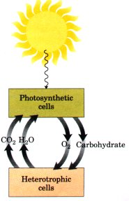
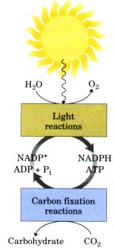
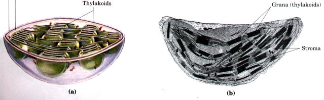
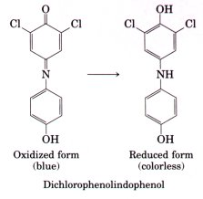
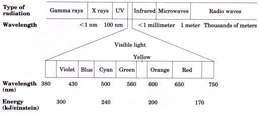
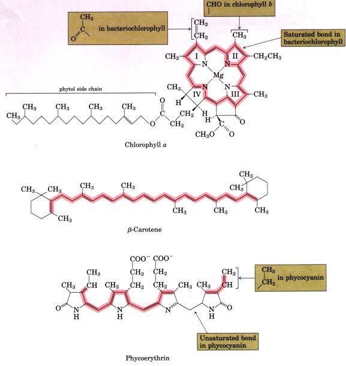
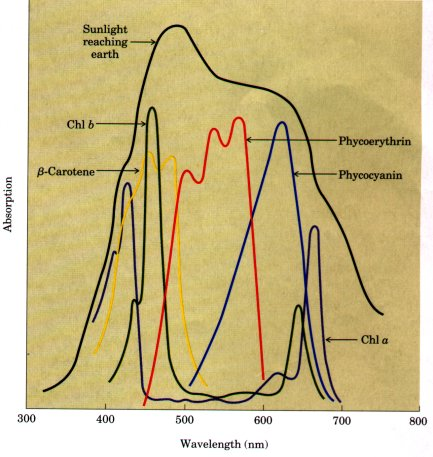
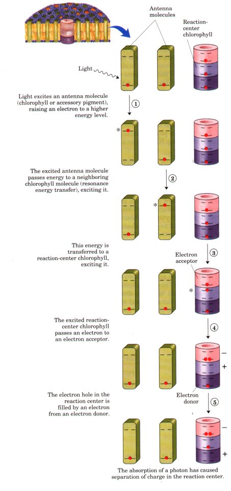

We now turn to another reaction sequence in which the flow of electrons is coupled to the synthesis of ATP: light-driven phosphorylation. The capture of solar energy by photosynthetic organisms and its conversion into the chemical energy of reduced organic compounds is the ultimate source of nearly all biological energy. Photosynthetic and heterotrophic organisms live in a balanced steady state in the biosphere (Fig. 18-32). Photosynthetic organisms trap solar energy and form ATP and NADPH, which they use as energy sources to make carbohydrates and other organic components from CO2 and H2O; simultaneously, they release O2 into the atmosphere. Aerobic heterotrophs (we humans, for example) use the O2 so formed to degrade the energy-rich organic products of photosynthesis to CO2 and H2O, generating ATP for their own activities. The CO2 formed by respiration in heterotrophs returns to the atmosphere, to be used again by photosynthetic organisms. Solar energy thus provides the driving force for the continuous cycling of atmospheric CO2 and O2 through the biosphere and provides the reduced substrates (fuels), such as glucose, on which nonphotosynthetic organisms depend.
| Enormous amounts of energy are stored as products of photosynthesis. Each year at least 1017 kJ of free energy from sunlight is captured and used for biosynthesis by photosynthetic organisms. This is more than ten times the fossil-fuel energy used each year by people the world over. Even fossil fuels (coal, oil, and natural gas) are the products of photosynthesis that took place millions of years ago. Because of our global dependence upon solar energy, past and present, for both energy and food, discovering the mechanism of photosynthesis is a central goal of biochemical research. |  Figure 18-32 Solar energy is the ultimate source of all biological energy. Photosynthetic organisms use the energy of sunlight to manufacture glucose and other organic cell products, which heterotrophic cells use as energy and carbon sources. |
The overall equation of photosynthesis describes an oxidationreduction reaction in which H20 donates electrons (as hydrogen) for the reduction of COZ to carbohydrate (CH2O):
CO2 + H2O  O2 + (CH2O)
O2 + (CH2O)
Unlike NADH (the hydrogen donor in oxidative phosphorylation), H2O is a poor electron donor; its standard reduction potential is 0.82 V, compared with -0.32 V for NADH. The central difference between photophosphorylation and oxidative phosphorylation is that the latter process begins with a good electron donor, whereas the former requires the input of energy in the form of light to create a good electron donor. Except for this crucial difference, the two processes are remarkably similar. In photophosphorylation, electrons flow through a series of membrane-bound carriers including cytochromes, quinones, and ironsulfur proteins, while protons are pumped across a membrane to create an electrochemical potential. This potential is the driving force for ATP synthesis from ADP and Pi by a membrane-bound ATP synthase complex closely similar to that which functions in oxidative phosphorylation.
| Photosynthesis encompasses two
processes: the light reactions, which occur only when
plants are illuminated, and the carbon fixation
reactions, or so-called dark reactions, which occur in
both light and darkness (Fig. 18-33). In the light
reactions, chlorophyll and other pigments of the
photosynthetic cells absorb light energy and conserve it
in chemical form as the two energy-rich products ATP and
NADPH; simultaneously, O2 is evolved. In the carbon
fixation reactions, ATP and NADPH are used to reduce CO2
to form glucose and other organic products. The formation
of O2, which occurs only in the light, and the reduction
of CO2, which does not require light, thus are distinct
and separate processes. In this chapter we are concerned
only with the light reactions; the reduction of CO2 is
described in Chapter 19. In photosynthetic eukaryotic cells, both the light and carbon fixation reactions take place in the chloroplasts (Fig. 18-34). When solar energy is not available, mitochondria in the plant cell generate ATP by oxidizing carbohydrates originally produced in chloroplasts in the light. Chloroplasts may assume many different shapes in different species, and they usually have a much larger volume than mitochondria. |
 Figure
18-33 The light reactions
generate energy-rich NADPH and ATP at the expense of
solar energy. These products are used in the carbon
fixation reactions, which occur in light or darkness, to
reduce CO2 to form trioses and more complex compounds
(such as glucose) derived from trioses. |

Figure 18-34 Schematic diagram (a) and electron micrograph (b) of a single chloroplast at high magnification.
They are surrounded by a continuous outer membrane, which, like the outer mitochondrial membrane, is permeable to small molecules and ions. An inner membrane system encloses the internal compartment, in which there are many flattened, membrane-surrounded vesicles or sacs, called thylakoids, which are usually arranged in stacks called grana. The thylakoid membranes are separate from the inner chloroplast membrane. Embedded in the thylakoid membranes are the photosynthetic pigments and all the enzymes required for the primary light reactions. The fluid in the compartment surrounding the thylakoids, the stroma, contains most of the enzymes required for the carbon fixation reactions, in which CO2 is reduced to form triose phosphates and, from them, glucose.
Our discussion here focuses on the nature of the light-absorbing systems and their roles in photosynthesis.
How do the pigment molecules of the thylakoid membranes transduce absorbed light energy into chemical energy? The key to answering this question came from a discovery made in 1937 by Robert Hill, a pioneer in photosynthesis research. He found that when leaf extracts containing chloroplasts were supplemented with a nonbiological hydrogen acceptor and then illuminated, evolution of O2 and simultaneous reduction of the hydrogen acceptor took place, according to an equation now known as the Hill reaction:
| 2H2O + 2A | light | 2AH2 + O2 |
where A is the artiiicial hydrogen acceptor. One of the nonbiological hydrogen acceptors used by Hill was the dye 2,6-dichlorophenolindophenol, now called a Hill reagent, which in its oxidized form (A) is blue and in its reduced form (AH2) is colorless. When the leaf extract supplemented with the dye was illuminated, the blue dye became colorless and O2 was evolved. In the dark neither O2 evolution nor dye reduction took place. This was the iirst specific clue to how absorbed light energy is converted into chemical energy: it causes electrons to flow from H2O to an electron acceptor. Moreover, Hill found that CO2 was not required for this reaction, nor was it reduced to a stable form under these conditions. He therefore concluded that O2 evolution can be dissociated from CO2 reduction. Several years later it was found that NADP+ is the biological electron acceptor in chloroplasts, according to the equation
| 2H2O + 2NADP+ | light | 2 NADPH + 2H+ + O2 |
| This equation shows an important distinction between mitochondrial oxidative phosphorylation and the analogous process in chloroplasts: in chloroplasts electrons flow from H2O to NADP+, whereas in mitochondrial respiration electrons flow in the opposite direction, from NADH or NADPH to O2, with the release of free energy. Because lightinduced electron flow in chloroplasts is in the reverse or "uphill" direction, from H2O to NADP+, it cannot occur without the input of free energy; this energy comes from light. To understand how this occurs, we must first consider the effects of light absorption on molecular structure. |  |
Visible light is electromagnetic radiation of wavelengths 400 to 700 nm, a small part of the electromagnetic spectrum (Fig. 18-35), ranging from violet to red. The energy of a single photon (a quantum of light) is greater at the violet end of the spectrum than at the red end. The energy in a "mole" of photons (one einstein; 6 × 1023 photons) is 170 to 300 kJ, about an order of magnitude more than the energy required to synthesize a mole of ATP from ADP and Pi (about 30 kJ under standard conditions). The energy of an einstein in the infrared or microwave regions of the spectrum is too small to be useful in the kinds of photochemical events that occur in photosynthesis. UV light and x rays, on the other hand, have so much energy that they damage proteins and nucleic acids and induce mutations that are often lethal.
 |
Figure 18-35 The spectrum of electromagnetic radiation, and the energy of photons in the visible range of the spectrum. One einstein is 6 × 1023 photons. |
The ability of a molecule to absorb light depends upon the arrangement of electrons around the atomic nuclei in its structure. When a photon is absorbed, an electron is lifted to a higher energy level. This happens on an all-or-none basis; to be absorbed, the photon must contain a quantity of energy (a quantum) that exactly matches the energy of the electronic transition. A molecule that has absorbed a photon is in an excited state, which is generally unstable. The electrons lifted into higher-energy orbitals usually return rapidly to their normal lower-energy orbitals; the excited molecule reverts (decays) to the stable ground state, giving up the absorbed quantum as light or heat or using it to do chemical work. The light emitted upon decay of excited molecules, called fluorescence, is always of a longer wavelength (lower energy) than the absorbed light. Excitation of molecules by light and their fluorescent decay are extremely fast processes, occurring in about 10-15 and 10-12 s, respectively. The initial events in photosynthesis are therefore very rapid.
The most important light-absorbing pigments in the thylakoid membranes are the chlorophylls, green pigments with polycyclic, planar structures resembling the protoporphyrin of hemoglobin (see Fig. 718), except that Mg2+, not Fe2+, occupies the central position (Fig. 1836). Chlorophyll a, present in the chloroplasts of all green plant cells, contains four substituted pyrrole rings, one of which (ring IV) is reduced, and a fifth ring that is not a pyrrole. All chlorophylls have a long phytol side chain, esterified to a carboxyl-group substituent in ring IV. The four inward-oriented nitrogen atoms of chlorophyll a are coordinated with the Mg2+.
 |
Figure 18-36 Structures of the primary photopigments chlorophylls a and b and bacteriochlorophyll, and of the accessory pigments ,β-carotene (a carotenoid) and phycoerythrin and phycocyanin (phycobilins). The areas shaded pink systems (alternating single and double bonds) which largely account for the absorption of visible light. |
The heterocyclic five-ring system that surrounds the Mg2+ has an extended polyene structure, with alternating single and double bonds. Such polyenes characteristically show strong absorption in the visible region of the spectrum (Fig. 18-37); the chlorophylls have unusually high molar absorption coefficients (see Box 5-1) and are therefore particularly well-suited for absorbing visible light during photosynthesis.
| Chloroplasts of higher plants always contain two types of chlorophyll. One is invariably chlorophyll a, and the second in many species is chlorophyll b, which has an aldehyde group instead of a methyl group attached to ring II (Fig. 18-36). Although both are green, their absorption spectra are slightly different (Fig. 18-37), allowing the two pigments to complement each other's range of light absorption in the visible region. Most higher plants contain about twice as much chlorophyll a as chlorophyll b. The bacterial chlorophylls differ only slightly from the plant pigments (Fig. 18-36). |  Figure 18-37 Absorption ot msible hght by photopigments shown in Fig. 18-36. Plants are green because their pigments absorb light from the red and violet regions of the spectrum, leaving primarily green light to be reflected or transmitted. Compare the absorption spectra of the pigments with the spectrum of sunlight reaching the earth's surface; the combination of chlorophylls (chl a and chl b) and accessory pigments enables plants to harvest most of the energy available from sunlight. |
Accessory Pigments Also Absorb LightIn addition to chlorophylls, the thylakoid membranes contain secondary light-absorbing pigments, together called the accessory pigments, the carotenoids and phycobilins. Carotenoids may be yellow, red, or purple. The most important are β-carotene (Fig. 18-36), a red-orange isoprenoid compound that is the precursor of vitamin A in animals, and the yellow carotenoid xanthophyll. The carotenoid pigments absorb light at wavelengths other than those absorbed by the chlorophylls (Fig. 18-37) and thus are supplementary light receptors. Phycobilins are linear tetrapyrroles that have the extended polyene system found in chlorophylls, but not their cyclic structure or central Mg2+. Examples are phycoerythrin and phycocyanin (Fig. 18-36). The relative amounts of the chlorophylls and the accessory pigments are characteristic for different plant species. It is variation in the proportions of these pigments that is responsible for the range of colors of photosynthetic organisms, which vary from the deep bluegreen of spruce needles, to the greener green of maple leaves, to the red, brown, or even purple color of different species of multicellular algae and the leaves of some decorative plants. Experimental determination of the effectiveness of light of different colors in promoting photosynthesis yields an action spectrum (Fig. 18-38), often useful in identifying the pigment primarily responsible for a biological effect of light. By capturing light in a region of the spectrum not used by other plants, a photosynthetic organism can claim its unique ecological niche. For example, the phycobilins, present only in red algae and cyanobacteria, absorb in the region 520 to 630 nm, allowing these organisms to live in niches where light of lower or higher wavelength has been filtered out by the pigments of other organisms living in the water above them, or by the water itsel? |
Figure 18-38 Two ways to determine the action spectrum for photosynthesis. (a) The results of a classic experiment done by T.W. Englemann in 1882 to determine what wavelength of light was most effective in supporting photosynthesis. Englemann placed a filamentous, photosynthetic alga on a microscope stage and illuminated it with light from a prism, so that cells in one part of the filament received mainly blue light, another yellow, another red. To determine which cells carried out photosynthesis most actively, bacteria known to migrate toward regions of high O2 concentration were also placed on the microscope slide. The distribution of bacteria showed highest O2 levels (produced by photosynthesis) in the regions illuminated with violet and red light. (b) A similar experiment using modern techniques for the measurement of O2 production yields the same result. An action spectrum describes the relative rate of photosynthesis for illumination with a constant number of photons of different wavelengths. Such an action spectrum is useful because it suggests (by comparison with absorption spectra such as those in Fig. 18-37) which pigments are able to channel energy into photosynthesis. |
The light-absorbing pigments of thylakoid membranes are arranged in functional sets or arrays called photosystems. In spinach chloroplasts each photosystem contains about 200 molecules of chlorophylls and about 50 molecules of carotenoids. The clusters can absorb light over the entire visible spectrum but especially well between 400 to 500 nm and 600 to 700 nm (Fig. 18-37). All the pigment molecules in a photosystem can absorb photons, but only a few can transduce the light energy into chemical energy. A transducing pigment consists of several chlorophyll molecules combined with a protein complex also containing tightly bound quinones; this complex is called a photochemical reaction center. The other pigment molecules in a photosystem are called light-harvesting or antenna molecules. They function to absorb light energy and transmit it at a very high rate to the reaction center where the photochemical reactions occur (Fig. 18-39, p. 578), which will be described in detail later.
| Figure 18-39 Organization of the photosystem components in the thylakoid membrane. (a) The distribution of photosystems I and II, ATP synthase, and the cytochrome bf complex in the thylakoid membranes is not random. Photosystem I and ATP synthase are almost completely excluded from the regions with tightly stacked membranes, whereas photosystem II and the cytochrome bf complex are enriched in these regions of tight packing. This separation of photosystems I and II prevents energy absorbed by photosystem II from being transferred directly to photosystem I, and also places photosystem I in the regions most accessible to NADP from the stroma. (b) An enlargement of a photosystem showing the reaction center, antenna chlorophylls, and accessory pigments. Cytochrome bf and ATP synthase of chloroplasts are described later in this chapter. |  |
The chlorophyll molecules in thylakoid membranes are bound to integral membrane proteins (chlorophyll a/b-binding, or CAB, proteins) that orient the chlorophyll relative to the plane of the membrane and confer light absorption properties that are subtly different from those of free chlorophyll. When isolated chlorophyll molecules in vitro are excited by light, the absorbed energy is quickly released as fluorescence and heat, but when chlorophyll in intact spinach leaves is excited by visible light (Fig. 18-40 (step l ), p. 579), very little fluorescence is observed. Instead, a direct transfer of energy from the excited chlorophyll (an antenna chlorophyll) to a neighboring chlorophyll molecule occurs, exciting the second molecule and allowing the first to return to its ground state (step 2). This resonance energy transfer is repeated to a third, fourth, or subsequent neighbor, until the chlorophyll at the photochemical reaction center becomes excited (step 3). In this special chlorophyll molecule, an electron is promoted by excitation to a higher-energy orbital. This electron then passes to a nearby electron acceptor that is part of the electron transfer chain of the chloroplast, leaving the excited chlorophyll molecule with an empty orbital (an "electron hole") (step 4 ). The electron acceptor thus acquires a negative charge. The electron lost by the reaction-center chlorophyll is replaced by an electron from a neighboring electron donor molecule (step 5 ), which becomes positively charged. In this way, excitation by Light causes electric charge separation and initiates an oxidationreduction chain. Coupled to the light-dependent electron flow along this chain are processes that generate ATP and NADPH.
 |
Figure 18-40 A generalized scheme showing the conversion of energy from an absorbed photon into separation of charges at the photosystem reaction center. The steps are further described in the text. Note that step 2 may be repeated a number of times between successive antenna molecules until a reaction-center chlorophyll is reached. The asterisk (*) represents the excited state of an antenna molecule. |